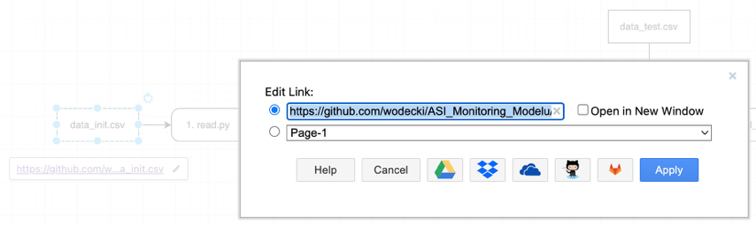
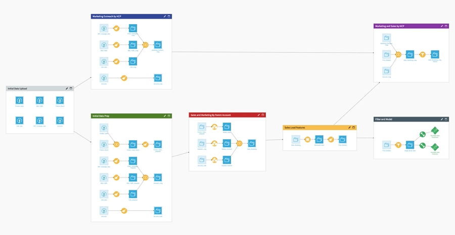
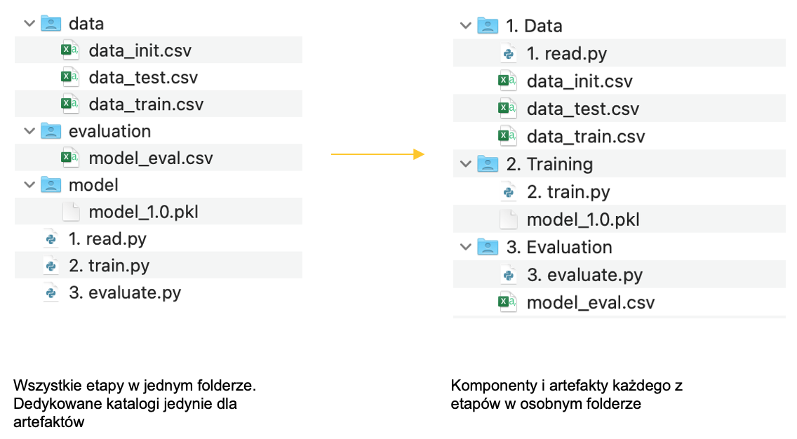
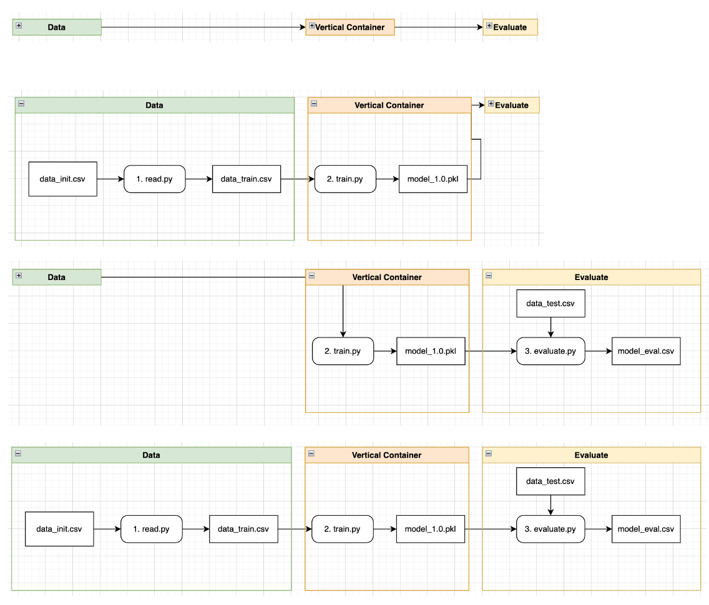

3.7 Modelowanie architektury - modelowanie
Mając przygotowaną szczegółową specyfikację działania modułu, stwórz szkic architektury korzystając np. z pakietu diagrams.net (możesz z niego korzystać w ramach aplikacji Google).
Umieść na schemacie:
- komponenty
- artefakty
- oraz relacje pomiędzy nimi.

W kolejnym kroku, podłącz poszczególne komponenty i artefakty do odpowiednich plików w repozytorium GitHub.

Aby podłączyć specyfikację artefaktu/komponentu stwórz dedykowane pole (np. Description), i wklej do niego hiperłącze do specyfikacji. Uwaga: ze względu na ograniczoną liczbę znaków, sugeruję wcześniej skrócić link do dokumentacji korzystając z serwisu takiego jak www.bit.ly.

Z czasem rozwój systemu wymusza modyfikację architektury. Aby utrzymać przejrzystość architektury, wart porządkować komponenty i artefakty w osobne struktury.

Przydatne może być wtedy uporządkowanie poszczególnych etapów modelowania w osobnych folderach.

W pakiecie diagrams.net mogą nam w tym pomóc pionowe kontenery (ang. vertical containers). Pozwalają one na grupowanie komponentów i artefaktów, i w efekcie uproszczenie całej wizualizacji.
Podsumowanie
Tworzenie aplikacji warto rozpocząć od jej zaprojektowania.
Projektowanie architektur uczenia maszynowego nie musi być poprzedzone ich tworzeniem. Z powodzeniem można wykorzystać w tym celu ogólnodostępne, darmowe rozwiązania wspomagające projektowanie schematów.
Korzyści z takiego podejścia to:
- Wizualizacja całości rozwiązania (komponenty, artefakty i relacje pomiędzy nimi)
- Szybki dostęp do aktualnych wersji komponentów i artefaktów dzięki połączeniu z GitHub
- Tworzenie własnych meta-opisów dzięki personalizowanym cechom obiektów.
Przydatne źródła
Świetny opis procesu projektowania pełnej architektury MLOps znajdziesz tutaj.